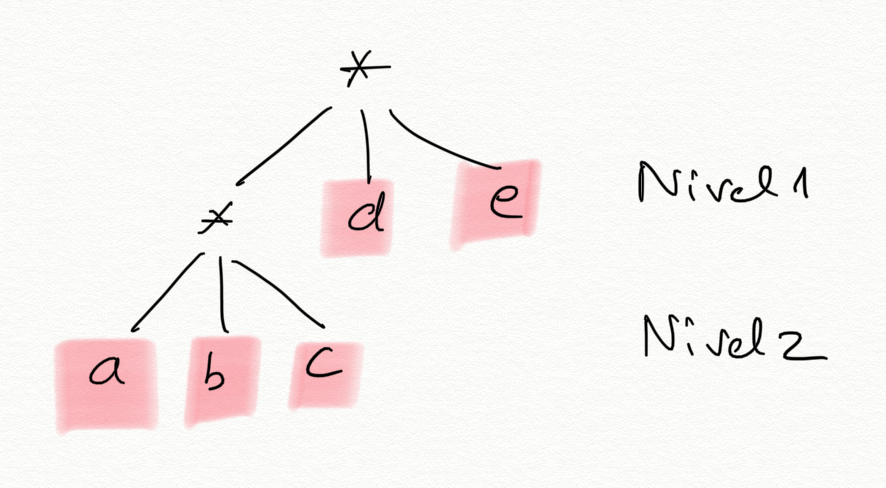
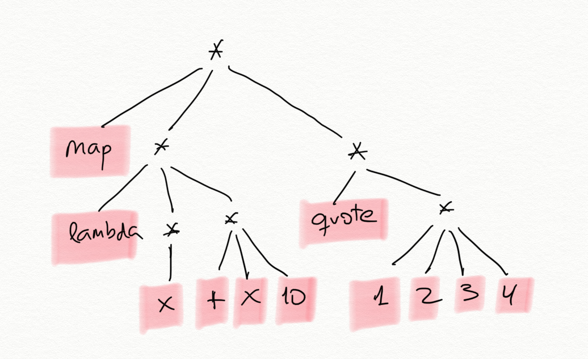
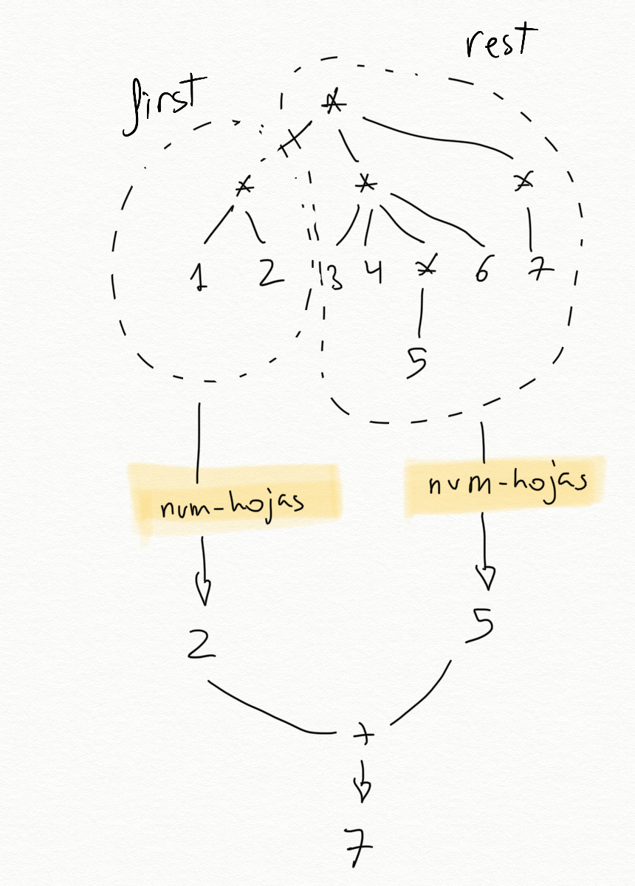
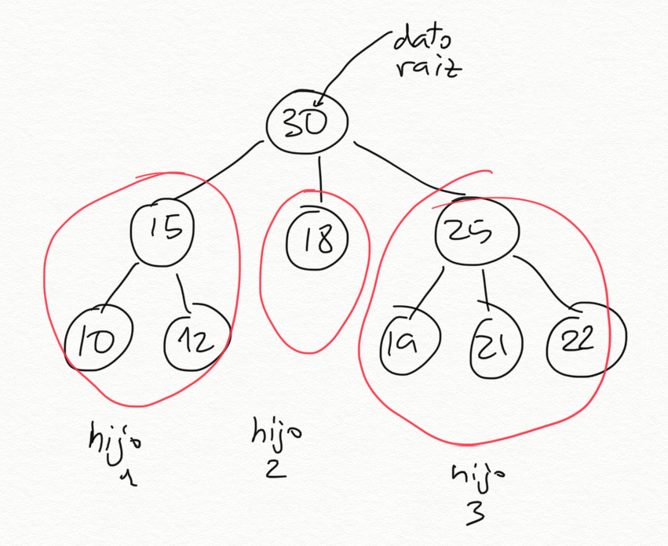
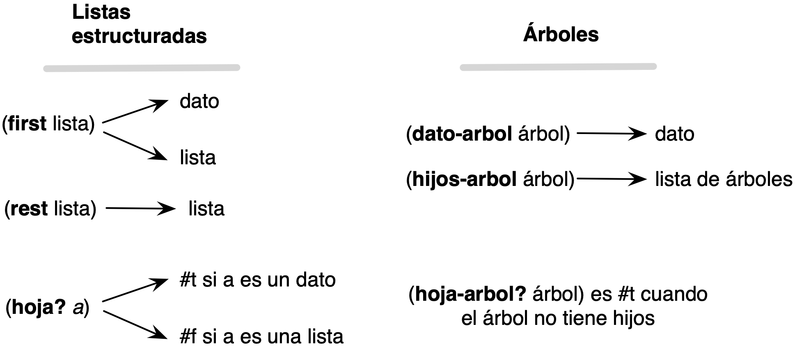
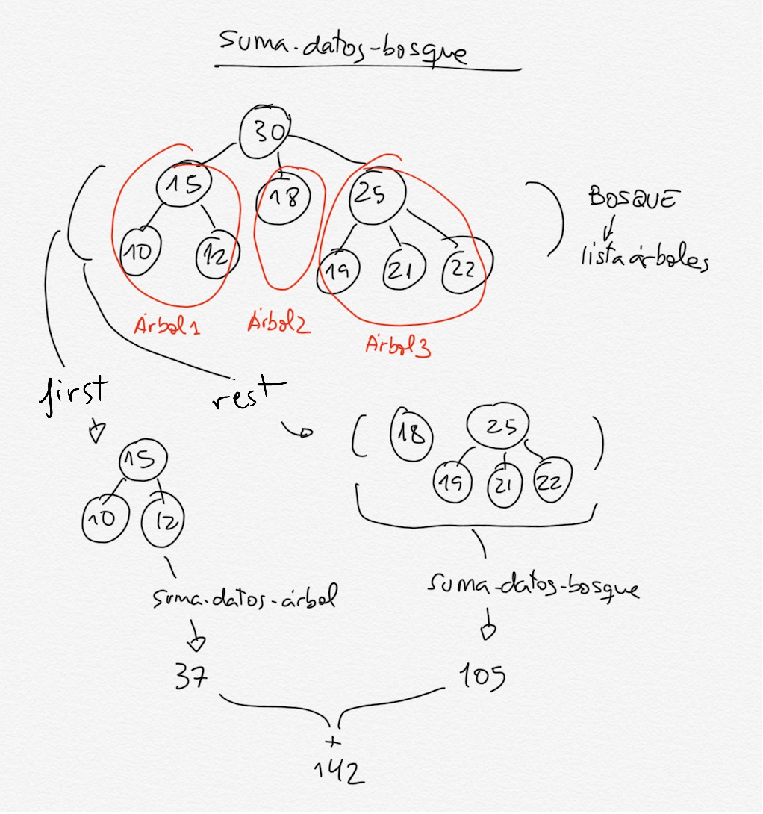
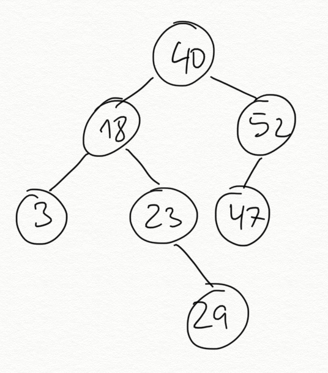

Topic 4: Recursive Data Structures¶
1. Structured Lists¶
We have seen that lists in Scheme are implemented as a recursive data structure, made up of a pair whose right part links to the rest of the list and which ends with a right part containing an empty list.
In this section we will study lists again from a high level of abstraction, using the functions:
(first lista)to obtain the first element of a list(rest lista)to obtain the rest of the list(cons dato lista)to construct a new list withdatoas its first element
In most of the functions and examples we have seen so far, lists are made up of data and traversing the list is a linear traversal, iterating over its elements.
In this section we will extend this concept and study how to work with lists that contain other lists.
We will see that this fundamentally changes the structure of lists and of the
functions that operate on them. The fundamental change is that the function
first lista can return two types of elements:
- An element of the list (of the type of elements contained in the list)
- Another list (made up of the type of elements contained in the list)
1.1. Definition and Examples¶
Lists in Scheme can contain elements of any type, including other lists.
We will call a list that contains other sublists a structured list. The opposite of a structured list is a flat list, a list made up of elements that are not lists. We will call the elements of a list that are not sublists leaves.
In the context of functional programming, structured lists whose leaves are symbols are called S-expressions (S-expression).
For example, the structured list:
(a b (c d e) (f (g h)))
is a structured list with 4 elements:
- The element
'a, a leaf - The element
'b, another leaf - The flat list
(c d e) - The structured list
(f (g h))
It can be constructed with any of the following expressions:
(define lista (list 'a 'b (list 'c 'd 'e) (list 'f (list 'g 'h))))
(define lista '(a b (c d e) (f (g h))))
We will consider a list made up of pairs to be a flat list, since it does not contain any sublist. For example, the list
((a . 3) (b . 5) (c . 12))
is a flat list of three elements (leaves) that are pairs.
1.1.1. Definitions in Scheme¶
We are going to write the previous definitions of hoja, plana, and
estructurada using Scheme code.
1.1.1.1. Function (hoja? dato)¶
We define a leaf as those elements of a structured list that are not lists:
(define (hoja? elem)
(not (list? elem)))
We will use this function to check whether a given element of a list is a leaf or not. For example, suppose we have the following list:
((1 2) 3 4 (5 6))
It is a list of 4 elements, where the first and the last are other sublists and the second and third are leaves. We can check whether its elements are leaves or not:
(define lista '((1 2) 3 4 (5 6)))
(hoja? (first lista)) ; ⇒ #f
(hoja? (second lista)) ; ⇒ #t
(hoja? (third lista)) ; ⇒ #t
(hoja? (fourth lista)) ; ⇒ #f
The empty list is not a leaf:
(hoja? '()) ; ⇒ #f
1.1.1.2. Function (plana? lista)¶
As we said before, a list is flat when all its elements are leaves. We want to
implement the function (plana? lista) that checks this.
For example:
(plana? '(a b c d e f)) ; ⇒ #t
(plana? (list (cons 'a 1) "Hola" #f)) ; ⇒ #t
(plana? '(a (b c) d)) ; ⇒ #f
(plana? '(a () b)) ; ⇒ #f
A recursive definition of a flat list:
A list is flat if and only if its first element is a leaf and the rest is flat.
And the base case:
An empty list is flat.
Using this recursive definition, we can implement in Scheme the function
(plana? lista), which checks whether a list is flat:
(define (plana? lista)
(or (null? lista)
(and (hoja? (first lista))
(plana? (rest lista)))))
The plana? function could also be implemented using the higher-order function
for-all?, which checks that all elements of a list satisfy a property. In
this case, being a leaf.
(define (plana-fos? lista)
(for-all? hoja? lista))
Function for-all?
Remember that the function (for-all? predicado lista) is implemented as
follows:
(define (for-all? predicado lista)
(or (null? lista)
(and (predicado (first lista))
(for-all? predicado (rest lista)))))
1.1.1.3. Function (estructurada? lista)¶
A list is structured when one of its elements is another list. As a base case, an empty list is not structured.
We want to implement the function (estructurada? lista) that checks whether a
list is structured.
(estructurada? '(1 2 3 4)) ; ⇒ #f
(estructurada? (list (cons 'a 1) (cons 'b 2) (cons 'c 3))) ; ⇒ #f
(estructurada? '(a () b)) ; ⇒ #t
(estructurada? '(a (b c) d)) ; ⇒ #t
(define (estructurada? lista)
(and (not (null? lista))
(or (list? (first lista))
(estructurada? (rest lista)))))
It could also be implemented using the higher-order function exists? to check
whether some element of the list is also another list.
(define (estructurada-fos? lista)
(exists? list? lista))
Function exists?
Remember that the function (exists? predicado lista) is implemented as
follows:
(define (exists? predicado lista)
(if (null? lista)
#f
(or (predicado (first lista))
(exists? predicado (rest lista)))))
It would actually have been enough to define one of the two functions and write the other one as the negation of the first:
(define (estructurada? lista)
(not (plana? lista)))
1.1.2. Examples of Structured Lists¶
Structured lists are very useful for representing hierarchical information, where we want to represent elements that contain other elements.
For example, Scheme expressions are structured lists:
(= 4 (+ 2 2))
(if (= x y) (* x y) (+ (/ x y) 45))
(define (factorial x) (if (= x 0) 1 (* x (factorial (- x 1)))))
The syntactic analysis of a sentence can generate a structured list of symbols, where the different elements of the sentence are grouped:
((Juan) (compró) (la entrada (de la película)) (el viernes por la tarde))
An HTML page, with its different elements, some inside others, can also be represented with a structured list:
((<h1> Mi lista de la compra </h1>)
(<ul> (<li> naranjas </li>)
(<li> tomates </li>)
(<li> huevos </li>) </ul>))
1.1.3. Level-Based Pseudo Trees¶
Structured lists define a level structure, where the initial list represents the first level and each sublist represents a lower level. The data in the lists represent the leaves.
For example, the level-based representation of the list ((a b c) d e) is the
following:

Each asterisk * represents a list. The branches that come out of the asterisk
represent the elements of the list. In the example, at the first level we have
a list with 3 elements: the list (a b c), d, and e. At the second level
we find the list (a b c), whose 3 elements are leaves.
The leaves d and e are at level 1 and in positions 2 and 3 of the list, and
the leaves a, b, and c are at level 2.
A structured list is not a tree
A structured list is not a tree in the strict sense, because a tree has data in all nodes, whereas in a structured list the data are only in the leaves.
Structured lists are used to group a set of data hierarchically at different levels.
Although they are different from trees, both are hierarchical data structures (with levels) that can be defined recursively and on which recursive algorithms can be defined. Later we will see how to define and work with trees in Scheme.
Another example. What would be the level-based representation of the following structured list?
(map (lambda (x) (+ x 10)) (quote (1 2 3 4)))

1.2. Recursive Functions on Structured Lists¶
1.2.1. Number of Leaves¶
As a first example, let's look at the function (num-hojas lista), which
counts the number of leaves in a structured list.
For example:
(num-hojas '((1 2) (3 4 (5) 6) (7))) ; ⇒ 7
As we mentioned before, a key issue in the functions we are going to build on
structured lists is that the first of a structured list may itself be another
list.
To calculate the number of leaves in a list, we can obtain the first element and the rest of the list, and recursively count the number of leaves in the first element and in the rest. Since it is a structured list, the first element may itself be another list, so we call recursion to count its leaves.
The definition of this general case using pseudocode is:
The number of leaves in a structured list is the sum of the number of leaves in its first element (which may be another list) and the number of leaves in the rest.

The recursion has two recursive calls. One receives the head element of the list, and the other receives the rest of the list.
;Caso general num-hojas
(define (num-hojas lisdat)
; Falta caso base
(+ (num-hojas (first lisdat))
(num-hojas (rest lisdat))))
No exponential cost
Although there are two recursive calls, this is not the same as in Fibonacci or Pascal, because recursive calls with the same data are not repeated. The recursion traverses the structured list and its cost will be the number of elements in the list.
To consider the base case, let's see how the recursive calls receive a smaller problem each time.
The recursive call on the rest of the list receives a list with 1 fewer element each time. At the end, the function will be called with an empty list. That will be one base case. The number of elements in an empty list is 0.
The recursive call on the head of the list is somewhat different. It receives a list in which we have gone down one level and which therefore has one fewer level. At the end, the function will be called with a leaf (a datum). That will be the other base case, and we will have to return 1.
The complete definition of the function is as follows:
(define (num-hojas lisdat)
(cond
((null? lisdat) 0)
((hoja? lisdat) 1)
(else (+ (num-hojas (first lisdat))
(num-hojas (rest lisdat))))))
Important
It should be noted that the parameter lisdat can be either a list or an
atomic datum. In that case, the function (hoja? lisdat) returns #t.
In strongly typed programming languages this would not be possible, because
the list and the datum would have different types. In that case, the code
should be a little longer and, before calling recursion, we would have to
check whether the element is a datum or another list. In Scheme, we can take
advantage of its characteristic of being weakly typed and make the code more
concise, always calling recursion with the first of the list, regardless
of whether it is a datum or another list.
The code for the version in which we check whether the element is a list before calling recursion would be the following:
(define (num-hojas lista)
(cond
((null? lista) 0)
((hoja? (first lista))
(+ 1 (num-hojas (rest lista))))
(else (+ (num-hojas (first lista))
(num-hojas (rest lista))))))
1.2.1.1. Version with Higher-Order Functions¶
We can also use the higher-order functions map and foldr to obtain a more
concise version.
A structured list has, as first-level elements, leaves or other sublists. We
can therefore map a lambda expression that is applied to each of those
elements. In the lambda expression, we check whether the element (the parameter
sublista of the lambda expression) is a leaf or a list. In the first case, we
return 1. In the second case, we apply the very function we are defining to
the sublist, which returns the number of leaves in that sublist.
The result of map will be a list of numbers (the number of leaves in each
component), which we can add using a foldr with the function +:
(define (num-hojas-fos ld)
(if (hoja? ld)
1
(foldr + 0 (map num-hojas-fos ld))))
A graphical explanation of how the function works on the list (1 (2 3) (4) (5
(6 7) 8)):

It would be equivalent to apply the sum with apply in order to add the
numbers in the list returned by map:
(define (num-hojas-fos ld)
(if (hoja? ld)
1
(apply + (map num-hojas-fos ld))))
Note
It is useful to know both expressions (the foldr one and the apply one)
because there are programming languages in which the apply function is not
defined. For example, Swift.
1.2.2. Flattening a List¶
Let's look at another example. The function (aplana lista) returns a flat
list with all the leaves of the list.
For example:
(aplana '(1 2 (3 (4 (5))) (((6)))))
; ⇒ (1 2 3 4 5 6)
The recursive solution is:
(define (aplana ld)
(cond
((null? ld) '())
((hoja? ld) (list ld))
(else
(append (aplana (first ld))
(aplana (rest ld))))))
With higher-order functions:
(define (aplana-fos ld)
(if (hoja? ld)
(list ld)
(foldr append '() (map aplana-fos ld))))
Using apply:
(define (aplana-fos ld)
(if (hoja? ld)
(list ld)
(apply append (map aplana-fos ld))))
1.2.3. Other Recursive Functions¶
We are going to design other recursive functions that work with the hierarchical structure of structured lists.
(pertenece-estruct? dato lista): searches for a leaf in a structured list.(cuadrado-estruct lista): squares all the leaves (we assume the structured list contains numbers).(map-estruct f lista): similar tomap, applies a function to all the leaves of the structured list and returns the result (another structured list).(altura lista): returns the number of levels of a structured list.(nivel-hoja dato lista): returns the level at which a datum is found in a list.
1.2.3.1. (pertenece-estruct? dato lista)¶
Checks whether dato appears in the structured list.
(pertenece-estruct? 'a '(b c (d (a)))) ; ⇒ #t
(pertenece-estruct? 'a '(b c (d e (f)) g)) ; ⇒ #f
Recursive solution:
(define (pertenece-estruct? dato ld)
(cond
((null? ld) #f)
((hoja? ld) (equal? dato ld))
(else (or (pertenece-estruct? dato (first ld))
(pertenece-estruct? dato (rest ld))))))
With higher-order functions:
(define (pertenece-fos? dato ld)
(if (hoja? ld)
(equal? dato ld)
(exists? (lambda (elem)
(pertenece-fos? dato elem)) ld)))
1.2.3.2. (cuadrado-estruct lista)¶
Now we are going to look at a different kind of function. One that constructs a structured list and returns it.
We want to implement the function (cuadrado-estruct lista), which receives a
structured list and returns another structured list with the same structure and
its numbers squared.
For example:
(cuadrado-estruct '(2 3 (4 (5)))) ; ⇒ (4 9 (16 (25))
The recursive solution is:
(define (cuadrado-estruct ld)
(cond ((null? ld) '())
((hoja? ld) (* ld ld ))
(else (cons (cuadrado-estruct (first ld))
(cuadrado-estruct (rest ld))))))
Recursion is called with the first and with the rest of the original list.
The result of both calls will be the corresponding structured lists with their
elements squared. The returned list is the result of inserting the list
returned by the recursive call with the first in the first position of the
list returned by the recursive call with the rest.
The version of this function with higher-order functions is very interesting:
(define (cuadrado-estruct-fos ld)
(if (hoja? ld)
(* ld ld)
(map cuadrado-estruct-fos ld)))
Since a structured list is composed of data or other sublists, we can apply
map so that it returns the list resulting from transforming the original list
with the function passed as a parameter.
1.2.3.3. (map-estruct f lista)¶
We can generalize the previous function and define the higher-order function on
structured lists (map-estructurada f lista), which returns a structured list
equal to the original with the result of applying function f to each of its
leaves.
For example:
(map-estruct (lambda (x) (* x x)) '(2 3 (4 (5)))) ; ⇒ (4 9 (16 (25))
The recursive solution is a generalization of the previous function, using
parameter f:
(define (map-estruct f ld)
(cond ((null? ld) '())
((hoja? ld) (f ld))
(else (cons (map-estruct f (first ld))
(map-estruct f (rest ld))))))
Solution with map:
(define (map-estruct-fos f ld)
(if (hoja? ld)
(f ld)
(map (lambda (elem)
(map-estruct-fos f elem)) ld)))
1.2.3.4. (altura lista)¶
The height of a structured list is given by its number of levels: a flat list
has height 1; for example, the list ((1 2 3) 4 5) has height 2 and the list
(((1)) 2 (3) 4) has height 3.
To calculate the height of a structured list, we have to obtain (recursively) the height of its first element and the height of the rest of the list, add 1 to the height of the first element, and return the maximum of the two numbers.

As base cases, the height of an empty list or of a leaf (datum) is 0.
In Scheme:
(define (altura ld)
(cond
((null? ld) 0)
((hoja? ld) 0)
(else (max (+ 1 (altura (first ld)))
(altura (rest ld))))))
(altura '(1 (2 3) 4)) ; ⇒ 2
(altura '(1 (2 (3)) 3)) ; ⇒ 3
(altura '(((1)) 2 (3) 4)) ; ⇒ 3
1.2.3.2.1. Version with Higher-Order Functions¶
And the second version, using the higher-order function map to obtain the
height of its first-level elements (which may be leaves or sublists) and
foldr to keep the maximum of the list of values returned by map.
(define (altura-fos ld)
(if (hoja? ld)
0
(+ 1 (foldr max 0 (map altura-fos ld)))))
We could also do this by replacing foldr with apply:
(define (altura-fos ld)
(if (hoja? ld)
0
(+ 1 (apply max (map altura-fos ld)))))
1.2.3.5. (nivel-hoja dato lista)¶
Let's look at one last function, (nivel-hoja dato lista), which traverses a
structured list searching for the datum and returns the level where it is
found. If the datum is not found in the list, it will return -1. If the datum
is found in more than one place in the list, the highest level will be
returned.
Examples:
(nivel-hoja 'b '(a b (c))) ; ⇒ 1
(nivel-hoja 'b '(a (b) c)) ; ⇒ 2
(nivel-hoja 'b '(a (b) d ((b)))) ; ⇒ 3
(nivel-hoja 'b '(a c d ((e)))) ; ⇒ -1
Recursive solution:
(define (nivel-hoja dato ld)
(cond
((null? ld) -1)
((hoja? ld) (if (equal? ld dato) 0 -1))
(else (max (suma-1-si-mayor-igual-que-0
(nivel-hoja dato (first ld)))
(nivel-hoja dato (rest ld))))))
The helper function is defined as follows:
(define (suma-1-si-mayor-igual-que-0 x)
(if (>= x 0)
(+ x 1)
x))
With higher-order functions:
(define (nivel-hoja-fos dato ld)
(if (hoja? ld)
(if (equal? ld dato) 0 -1)
(suma-1-si-mayor-igual-que-0
(foldr max -1 (map (lambda (elem)
(nivel-hoja-fos dato elem)) ld)))))
2. Trees¶
2.1. Defining Trees in Scheme¶
2.1.1. Tree Definition¶
A tree is a data structure defined by a root value, which is the parent of the whole structure, from which other child subtrees emerge (Wikipedia).
A tree can be defined recursively as follows:
- A collection of a datum (the value of the tree root) and a list of children that are also trees.
- A leaf is a tree with no children (a datum with an empty list of children).
An example of a tree:

The previous tree has number 30 as its root datum and has 3 child trees:
- The first child is a tree with root 15 and two leaf children, 10 and 12.
- The second child is a leaf tree, with value 18.
- The third child is a tree with root 25 and three leaf children: 19, 21, and 22.
2.1.2. Representing Trees with Lists¶
In Scheme, the list is the main data structure. How can we build a tree using lists?
We can do it in several ways, but we choose the following: use a list of n+1 elements to represent a tree with n children:

- the first element of the list will be the root datum
- the rest will be the child trees
tree -> (datum child-1 child-2 ... child-n)
Leaf nodes (data at the end of the tree that have no children) are also trees. Since they have no children, they are represented as lists with a single element, the datum itself.
Leaf node -> (datum)
The way to represent the previous tree

will be the following list:
(30 (15 (10) (12)) (18) (25 (19) (21) (22)))
The elements of this list are:

- The first element is the number
30, the root-value datum of the tree. - The second element is the list
(15 (10) (12)), which represents the tree with datum15and two children. - The third element is the list
(18), which represents the leaf tree made up of an 18. - The fourth element is the list
(25 (19) (21) (22)), which represents the tree with datum25and three children.
We could define the tree with the following statement:
(define arbol1 '(30 (15 (10) (12)) (18) (25 (19) (21) (22))))
One more example. How is the tree in the following figure implemented in Scheme?

It would be done with the list in the following statement:
(define arbol2 '(40 (18 (3) (23 (29))) (52 (47))))
2.1.3. Abstraction Barrier¶
Once the way to represent trees has been defined, we are going to define the basic functions for handling them. We will see the functions for obtaining the datum and the children, and the function for constructing a new tree. These functions provide what is called the abstraction barrier of the tree data type.
In all function names in the abstraction barrier, we add the suffix -arbol.
We define two sets of functions: constructors to construct a new tree and selectors to obtain the elements of the tree. We will start with the selectors.
Selectors
Functions that obtain the elements of a tree:
(define (dato-arbol arbol)
(first arbol))
(define (hijos-arbol arbol)
(rest arbol))
(define (hoja-arbol? arbol)
(null? (hijos-arbol arbol)))
It is important to be clear about the types returned by the first two functions:
(dato-arbol arbol): returns the datum at the root of the tree.(hijos-arbol arbol): returns a list of child trees. Sometimes we will call a list of trees a forest. We will be able to traverse that list using the functionsfirstandrestto obtain the child trees.
We show arbol1 again to check these functions.
The previous functions return the following values:
(dato-arbol arbol1) ; ⇒ 30
(hijos-arbol arbol1) ; ⇒ ((15 (10) (12)) (18) (25 (19) (21) (22)))
(hoja-arbol? (first (hijos-arbol arbol1))) ; ⇒ #f
(hoja-arbol? (second (hijos-arbol arbol1))) ; ⇒ #t
- The call
(dato-arbol arbol1)returns the datum at the root of the tree, the number30. - The invocation
(hijos-arbol arbol1)returns a list of three elements, the child trees:- The first element is the list
(15 (10) (12)), which represents the tree made up of15at its root and the leaves10and12. - The second element is the leaf tree
18, represented by the list(18). - The third is the list
(25 (19) (21) (22)), which represents the tree made up of25at its root and the leaves19,21, and22.
- The first element is the list
It is very important to consider, in each case, what type of data we are working with and to use the appropriate abstraction barrier in each case:
- The function
hijos-arbolalways returns a list of trees, which we can traverse usingfirstandrest. - The
firstof a list of trees (returned byhijos-arbol) is always a tree, and we must use the functions of its abstraction barrier:dato-arbolandhijos-arbol. - The function
dato-arbolreturns a datum, of the type we store in the tree. In the example tree it is a number.
For example, to obtain the number 12 in the previous tree, we would have to
do the following: access the first element of the list of children, then the
second child of that tree, and finally access its datum. Remember that
hijos-arbol returns the list of child trees, so we will use the functions
first and rest to traverse them and obtain the elements we are interested
in:
(dato-arbol (second (hijos-arbol (first (hijos-arbol arbol1)))))
; ⇒ 12
Constructor
We define a constructor function that abstracts the construction of a tree and encapsulates its concrete implementation. To construct a tree we need a datum and a list of child trees. If the list of child trees is empty, we will have a leaf node.
(define (construye-arbol dato lista-arboles)
(cons dato lista-arboles))
We will call the construye-arbol function by passing its datum (mandatory)
and the list of child trees. If an empty list is passed as a parameter, we are
defining a leaf node.
For example, to define a leaf node with datum 2:
(define arbol3 (construye-arbol 2 '()))
And to define a tree with 3 children:
(define arbol4 (construye-arbol 10 (list (construye-arbol 2 '())
(construye-arbol 5 '())
(construye-arbol 9 '())))
The previous tree 1 can be constructed with the following calls to the constructor. We store the child trees in auxiliary variables to make the expression easier to understand:
(define arbol-15 (construye-arbol 15 (list (construye-arbol 10 '())
(construye-arbol 12 '()))))
(define arbol-18 (construye-arbol 18 '()))
(define arbol-25 (construye-arbol 25 (list (construye-arbol 19 '())
(construye-arbol 21 '())
(construye-arbol 22 '()))))
(define arbol1b (construye-arbol 30 (list arbol-15 arbol-18 arbol-25)))
arbol1b ; ⇒ (30 (15 (10) (12)) (18) (25 (19) (21) (22)))
2.1.4. Abstraction Barriers of Trees and Structured Lists¶
It is important to distinguish the abstraction barrier of trees from that of structured lists. Although a tree is implemented in Scheme with a structured list, when defining functions on trees we must work with the functions defined above.
The following diagram summarizes the characteristics of the selectors of the abstraction barriers for lists and trees:

Important
We must use the abstraction barrier when working with trees because this separates our code from the underlying implementation of the data type. In this way, it is possible to change the implementation of the data type without affecting the functions we have defined using the barrier. The only thing that must be changed is the implementation of the abstraction barrier.
Other advantages of using the abstraction barrier, just as important as the previous one, are:
-
The code is much more readable. Since Scheme is a weakly typed language, in an expression such as
(dato-arbol elem)we know that the element we are working on is a tree (not a number, a string, or a boolean). -
The code can be ported to any programming language. If we want to work with trees in JavaScript, for example, we will only have to implement the abstraction barrier in that language. Once this is done, all the functions that work with trees, such as those we will see below, will work correctly.
2.2. Recursive Functions on Trees¶
We are going to design the following recursive functions:
(suma-datos-arbol arbol): returns the sum of all nodes(to-list-arbol arbol): returns a list with the data in the tree(cuadrado-arbol arbol): squares all the data in a tree while preserving the structure of the original tree(map-arbol f arbol): returns a tree with the structure of the original tree by applying functionfto its subdata.(altura-arbol arbol): returns the height of a tree
They all share a similar mutual-recursion pattern.
2.2.1. Function suma-datos-arbol¶
We are going to implement a recursive function that sums all the data in a tree.
A tree will always have a datum and a list of children (which may be empty),
which we obtain with the functions dato-arbol and hijos-arbol. We can
therefore pose the problem of summing the data in a tree as the sum of its root
datum and what is returned by a helper function that sums the data in its list
of children (we call a list of children a forest):
(define (suma-datos-arbol arbol)
(+ (dato-arbol arbol)
(suma-datos-bosque (hijos-arbol arbol))))
This function sums the data in one tree. We can therefore use it to build the following function, which sums a list of trees:
(define (suma-datos-bosque bosque)
(if (null? bosque)
0
(+ (suma-datos-arbol (first bosque)) (suma-datos-bosque (rest bosque)))))
We can visualize how suma-datos-bosque works in the following figure:

The general case of the function obtains the first tree in the list (a tree)
and calls the function suma-datos-arbol to obtain the sum of its data. It
also obtains the rest of the forest (another list of trees) and recursively
calls itself to sum all its trees.
We have mutual recursion: to sum the data in a list of trees, we call the
sum of an individual tree, which in turn calls the sum of its children, and so
on. The recursion ends when we calculate the sum of a leaf tree. Then an empty
list is passed to suma-datos-bosque, and it returns 0.
(suma-datos-arbol arbol1) ; ⇒ 172
Alternative version with higher-order functions
Just as we did with structured lists, it is possible to obtain a more concise and elegant version using higher-order functions:
(define (suma-datos-arbol-fos arbol)
(foldr +
(dato-arbol arbol)
(map suma-datos-arbol-fos (hijos-arbol arbol))))
The function map applies the very function we are defining
(suma-datos-arbol-fos) to each of the child trees (obtained with the function
(hijos-arbol arbol)). Taking the recursive leap of faith, the function will
return, for each child tree, the sum of all its nodes. Thus, the result of
map will be a list with the sum of the nodes of all child trees.
The function foldr adds all those numbers in the list and the root number.
Note
It may look as if the previous function is missing a base case. When does
the recursion end? The answer lies in how map works: when it receives an
empty list, it also returns an empty list. To check this, you can think
about what would happen if you passed the function a leaf tree.
An example of how it works would be the following:
(suma-datos-arbol-fos '(1 (2 (3) (4)) (5) (6 (7)))) ⇒
(foldr +
1
(map suma-datos-arbol-fos '((2 (3) (4))
(5)
(6 (7))))) ⇒
(foldr + 1 '(9 5 13)) ⇒
28
- The tree we want to sum has 1 at the root and three children:
(2 (3) (4)),(5), and(6 (7)). - Applying
map suma-datos-arbol-fosto the list of children returns a list with the sum of the nodes of each child:(9 5 13). - The function
foldradds that list and the value of the root node (1).
We can graphically visualize how map works with the following figure:

2.2.2. Function to-list-arbol¶
We want to design a function (to-list-arbol arbol) that returns a list with
the data in the tree in a preorder traversal (first the root datum and then
the data of its children from left to right).
The solution, following the pattern seen in suma-datos, is the following.
(define (to-list-arbol arbol)
(cons (dato-arbol arbol)
(to-list-bosque (hijos-arbol arbol))))
(define (to-list-bosque bosque)
(if (null? bosque)
'()
(append (to-list-arbol (first bosque))
(to-list-bosque (rest bosque)))))
As before, the function uses mutual recursion: to list all the nodes, we add
the datum to the list of nodes returned by the function to-list-bosque. This
function takes a list of trees (a forest) and returns the preorder list of
its nodes. To do this, it concatenates the list of nodes of its first element
(the first tree) with the list of nodes of the rest of the trees (returned by
the recursive call).
Example:
(to-list-arbol '(* (+ (5) (* (2) (3)) (10)) (- (12))))
; ⇒ (* + 5 * 2 3 10 - 12)
An alternative definition using higher-order functions:
(define (to-list-arbol-fos arbol)
(cons (dato-arbol arbol)
(foldr append '() (map to-list-arbol-fos (hijos-arbol arbol)))))
This version is very elegant and concise. It uses the function map, which
applies a function to the elements of a list and returns the resulting list.
Since what (hijos-arbol arbol) returns is precisely a list of trees, we can
apply to its elements any function defined on trees. Even the very function we
are defining (take the recursive leap of faith!).
2.2.3. Function cuadrado-arbol¶
Now let's look at the function (cuadrado-arbol arbol), which takes a tree of
numbers and returns a tree with the same structure and its data squared:
(define (cuadrado-arbol arbol)
(construye-arbol (cuadrado (dato-arbol arbol))
(cuadrado-bosque (hijos-arbol arbol))))
(define (cuadrado-bosque bosque)
(if (null? bosque)
'()
(cons (cuadrado-arbol (first bosque))
(cuadrado-bosque (rest bosque)))))
Example:
(cuadrado-arbol '(2 (3 (4) (5)) (6)))
; ⇒ (4 (9 (16) (25)) (36))
Version 2, with the higher-order function map:
(define (cuadrado-arbol-fos arbol)
(construye-arbol (cuadrado (dato-arbol arbol))
(map cuadrado-arbol-fos (hijos-arbol arbol))))
2.2.4. Function map-arbol¶
The function map-arbol is a higher-order function that generalizes the
previous function. We define an additional parameter in which the function to
apply to the elements of the tree is passed.
(define (map-arbol f arbol)
(construye-arbol (f (dato-arbol arbol))
(map-bosque f (hijos-arbol arbol))))
(define (map-bosque f bosque)
(if (null? bosque)
'()
(cons (map-arbol f (first bosque))
(map-bosque f (rest bosque)))))
Examples:
(map-arbol cuadrado '(2 (3 (4) (5)) (6)))
; ⇒ (4 (9 (16) (25)) (36))
(map-arbol (lambda (x) (+ x 1)) '(2 (3 (4) (5)) (6)))
; ⇒ (3 (4 (5) (6)) (7))
With map:
(define (map-arbol-fos f arbol)
(construye-arbol (f (dato-arbol arbol))
(map (lambda (x)
(map-arbol-fos f x)) (hijos-arbol arbol))))
2.2.5. Function altura-arbol¶
Finally, we are going to define a function that returns the height of a tree.
Remember the following definitions related to trees:
- Length of a path between two nodes: number of edges.
- Height of a node: length of the longest path from the node to a leaf.
- Depth of a node: length of the path from the root to the node.
- Depth of a tree: depth of the deepest node.
- Level of a node: number of predecessors.
- Height of a tree: height of the root.
We can implement height in a way similar to what we did with structured lists: we calculate the height of the child trees, keep the greatest one, and add 1 to add the edge of the path from the root to the child.
We calculate the greatest height of the children with the function
altura-bosque.
(define (altura-arbol arbol)
(if (hoja-arbol? arbol)
0
(+ 1 (altura-bosque (hijos-arbol arbol)))))
(define (altura-bosque bosque)
(if (null? bosque)
0
(max (altura-arbol (first bosque))
(altura-bosque (rest bosque)))))
Examples:
(altura-arbol '(2)) ; ⇒ 0
(altura-arbol '(4 (9 (16) (25)) (36))) ; ⇒ 2
The solution with higher-order functions is similar to the one we saw with structured lists:
(define (altura-arbol-fos arbol)
(if (hoja-arbol? arbol)
0
(+ 1 (foldr max 0
(map altura-arbol-fos (hijos-arbol arbol))))))
The function map maps the function itself over the child trees; that function
calculates the height of each child (one less than the height of the parent, or
0 if it is a leaf).
The function map therefore returns a list with the heights of the children,
from which we obtain the maximum by folding the list with the function max.
Finally, we add 1 to return the height of the complete tree (one level more than the maximum level of the children).
3. Binary Trees¶
3.1. Defining Binary Trees in Scheme¶
Binary trees are trees whose nodes have 0, 1, or 2 children. For example, the tree shown in the following figure is a binary tree.

Unlike the generic trees seen above, a binary tree cannot have more than two children.
We will represent them in Scheme using a list of three elements:
- Datum
- Left child (another binary tree)
- Right child (another binary tree)
When the left or right child (or both) does not exist, we will use an empty list to indicate an empty node.
In this way, a leaf node with datum 10 will be represented in Scheme with the list:
(10 () ())
For example, we represent the tree in the previous figure with the following list:
(40 (18 (3 () ())
(23 ()
(29 () ())))
(52 (47 () ())
()))
Visually, we can represent it as follows. The non-existence of a left child or a right child is represented by an empty list.

3.1.1. Abstraction Barrier¶
We define the following abstraction barrier for binary trees. We end all
function names with the suffix -arbolb (binary tree).
Selectors
The selectors of the binary-tree abstraction barrier are the following.
(define (dato-arbolb arbol)
(first arbol))
(define (hijo-izq-arbolb arbol)
(second arbol))
(define (hijo-der-arbolb arbol)
(third arbol))
(define arbolb-vacio '())
(define (vacio-arbolb? arbol)
(equal? arbol arbolb-vacio))
(define (hoja-arbolb? arbol)
(and (vacio-arbolb? (hijo-izq-arbolb arbol))
(vacio-arbolb? (hijo-der-arbolb arbol))))
As part of the abstraction barrier, we define the constant arbolb-vacio,
which takes the value of an empty list.
Constructor
(define (construye-arbolb dato hijo-izq hijo-der)
(list dato hijo-izq hijo-der))
For example, to construct a tree with 10 at the root, 8 as its left child, and 15 as its right child using the constructor of the abstraction barrier:
(define arbolb1
(construye-arbolb 10 (construye-arbolb 8 arbolb-vacio arbolb-vacio)
(construye-arbolb 15 arbolb-vacio arbolb-vacio)))
Another example, the binary tree in the previous figure using the constructor of the abstraction barrier:
(define arbolb2
(construye-arbolb 40
(construye-arbolb 18
(construye-arbolb 3 arbolb-vacio arbolb-vacio)
(construye-arbolb 23
arbolb-vacio
(construye-arbolb 29
arbolb-vacio
arbolb-vacio)))
(construye-arbolb 52
(construye-arbolb 47 arbolb-vacio arbolb-vacio)
arbolb-vacio)))
3.2. Recursive Functions on Binary Trees¶
Let's look at the following recursive functions on binary trees:
(suma-datos-arbolb arbol): returns the sum of all nodes(to-list-arbolb arbol): returns a list with the data in the tree(cuadrado-arbolb arbol): squares all the data in a tree while preserving the structure of the original tree
These functions use a mixture of the patterns used in recursion to work with generic trees and recursion to work with structured lists. We have a datum at the root, which we have to combine with what the recursion applied to the left child returns and what the recursion applied to the right child returns.
suma-datos-arbolb
(define (suma-datos-arbolb arbol)
(if (vacio-arbolb? arbol)
0
(+ (dato-arbolb arbol)
(suma-datos-arbolb (hijo-izq-arbolb arbol))
(suma-datos-arbolb (hijo-der-arbolb arbol)))))
(suma-datos-arbolb arbolb2) ; ⇒ 212
Since the left child and the right child are also binary trees, we can call recursion with those trees. Those recursive calls will return the sum of the data in each subtree. We then add the root datum.
To define the base case, we can see that in each recursive call we obtain the left child and the right child. At the end, we will reach an empty tree, in which case we return 0.
The following figure represents how the general case works.

to-list-arbolb
The function to-list-arbolb is similar to the one seen with generic trees. It
receives a binary tree and returns a list with the data in preorder traversal.
(define (to-list-arbolb arbol)
(if (vacio-arbolb? arbol)
'()
(cons (dato-arbolb arbol)
(append (to-list-arbolb (hijo-izq-arbolb arbol))
(to-list-arbolb (hijo-der-arbolb arbol))))))
(to-list-arbolb arbolb2) ; ⇒ (40 18 3 23 29 52 47)
It works similarly to the sum: we call recursion on the left and on the right.
The result of the recursive calls will be two lists that we have to concatenate
with append. Finally, we add the root datum at the head with cons.
cuadrado-arbolb
Finally, the function cuadrado-arbolb constructs a new binary tree by
squaring the datum at the root, its left child, and its right child. To
construct the binary tree, we call the constructor construye-arbolb.
(define (cuadrado-arbolb arbol)
(if (vacio-arbolb? arbol)
arbolb-vacio
(construye-arbolb (cuadrado (dato-arbolb arbol))
(cuadrado-arbolb (hijo-izq-arbolb arbol))
(cuadrado-arbolb (hijo-der-arbolb arbol)))))
(cuadrado-arbolb arbolb1) ; ⇒ (100 (64 () ()) (225 () ()))
4. Bibliography - SICP¶
In this topic we explain concepts from the following chapters of the book Structure and Interpretation of Computer Programs:
Programming Languages and Paradigms, academic year 2025-26
© Department of Computer Science and Artificial Intelligence, University of Alicante
Domingo Gallardo, Cristina Pomares, Antonio Botía, Francisco Martínez